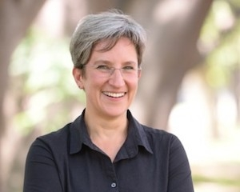

Entrevista a un periodista sobre su proceso de investigación
El "A mi se me hace que..." de Alejandra Xanic
Para Alejandra Xanic, la primera mexicana en obtener el premio Pulitzer en la categoría de investigación, todo trabajo periodístico comienza con un “a mi se me hace que”. Este “a mi se me hace que” a su vez nace en la intriga: “Muchas veces tiene que ver con la curiosidad nuestra, nuestra capacidad de hacerle preguntas a las cosas”, comenta Xanic. También se trata de la capacidad de ver más allá de lo que la mayoría de las personas ven, pues Alejandra Xanic se fija “no nada más en aquello que es novedoso, sino en aquello que es desconocido, aquello que está oculto, aquello que es secreto”. Posiblemente fue esta mirada la que la llevó a investigar las explosiones de 1992 en Guadalajara desde antes de que sucedieran, trabajo con el que obtuvo el Premio Nacional de Periodismo ese mismo año.
Una vez que tiene en la mira ese “a mi se me hace que”, Xanic respalda sus sospechas y las convierte en hipótesis. “La hipótesis es un enunciado que nos hacemos pero ya informado, ya con un nivel de pre-reporteo”, explica, “es una afirmación muy posiblemente cierta de algo que sospechamos que ocurre porque hemos hecho labores de investigación previa”. Aunque el “a mi se me hace que” es el primer paso, Xanic comenta que es tan solo una conjetura, y para convertirla en una hipótesis, hay que validar las sospechas iniciales y los datos básicos: “Solamente cuando tienes un cúmulo de indicio y de confirmaciones básicas, puedes decir ‘aquí hay algo’ y hacer tu hipótesis”, puntualiza.
Xanic también señala que una hipótesis no es lo mismo que un tema, pues la hipótesis debe ser específica y clara, refiere a información verificable y huye de abstracciones: “las hipótesis buenas son como ‘derecha la flecha’, nos dice justamente qué vamos a ir a buscar”. Además, al formular sus hipótesis Xanic evita complicaciones y usa siempre “lenguaje claro, sencillo, no tiene que ser un lenguaje legaloide, es como hablamos nosotros en la cocina, con nuestros cuates, sin florituras”.
Y aunque para Xanic la hipótesis “es como un faro” que “nos recuerda a dónde vamos”, también hace hincapié en que no es permanente ni fija: “La hipótesis es algo provisional, y es algo con lo que creo que los reporteros nos hemos resistido, porque no es que nos estemos casando con algo sino que es un enunciado que vamos a poner a prueba”, comenta Xanic, “se puede caer, puede cambiar, es un organismo vivo”.
El periodista Daniel Santoro refiere a la cola de una rata cuando habla del punto de partida de una historia, y Alejandra Xanic retoma esta imagen: “Yo digo que cuando pasa algo así, no sabes si es ratita, ratón o tlacuache”, explica, “entonces hay que jalar para ver qué demonios está así y es lo que nos permite hacer la hipótesis”.
Una vez formulada la hipótesis, Alejandra Xanic pone su atención en las evidencias: “A veces es hacer una lista de lo primero que venga a la mente, y la siguiente gran pregunta es cómo llego a ellas”, explica. Para hacerlo, Xanic explora todas las diferentes maneras en las que puede llegar a las evidencias que necesita hasta encontrar cuál es la ruta más corta, sencilla y directa.
Es entonces cuando Xanic llega a un punto decisivo, en el que su investigación debe sobrevivir a los que ella llama los “pasos de la muerte” y definen si la historia es digna de desarrollar. “Todavía es muy verde el proyecto”, explica, “todavía nos podríamos estar equivocando, porque quizás nuestra hipótesis está equivocada”. Por ello, en ese momento, Xanic se pregunta una serie de cosas para identificar si la historia vale la pena o no: ¿es de interés público, o sólo me interesa a mí?, ¿puede generar un dato nuevo?, ¿revela alguna falla estructural?, ¿qué se necesita para publicarla?, ¿es viable?
Si la investigación pasa el examen, entonces Xanic se plantea la historia mínima y la historia máxima que podría resultar de su investigación. Se plantea a sí misma el mejor y el peor de los casos. De esta manera, se puede imaginar en dónde buscar para llegar a la historia máxima, y sabe a dónde puede dirigirse en caso de que tenga que recaer en la historia mínima.
Tras haber superado los pasos de la muerte, Xanic se pregunta: “¿Y ahora cómo demonios investigo esto?”, y para darse respuesta, crea un plan de acción. Comienza con una lluvia de ideas, grandes listas sin orden ni jerarquías en donde plasma todo lo que la investigación podría necesitar: “Pensemos en todos los tipos de registro que puede haber y pensemos también en quiénes son esas personas que tenemos que entrevistar”, explica. Hoy en día, los registros existen en documentos, en audios, en fotografías, en videos, y en este punto de la investigación, Xanic comienza a considerarlos todos para crear “un documento maestro que vamos a seguir alimentando, que vamos a ir moviendo”.
“Yo lo que hago es que tengo un archivo de word”, comenta Xanic, “y hago mis listas, y esto se vuelve un documento que me acompaña durante todo mi reportaje, dúrese una semana, quince días, o un año, pero es un documento vivo que siempre me va indicando qué es lo prioritario”. Con este documento, Xanic explica que puede irse a dormir y al día siguiente retomar el trabajo en donde lo dejó, sin perderse, siempre consciente de cuáles son sus prioridades y los siguientes pasos que debe dar. Este plan maestro, sin embargo, no puede existir por sí solo: “Es importante en esta fase asegurarnos que en nuestro plan de acción haya una alineación y un balance”, explica Xanic, “que la hipótesis, la evidencia y el plan estén muy vinculados”.
Xanic también resalta la importancia de “ir en contra de nosotros”, y se remite a un estudio de la universidad de Columbia que demuestra que los seres humanos tenemos una predisposición biológica a encontrar placer en la confirmación de nuestras presunciones, por lo que Xanic considera que a lo largo de una investigación periodística “tenemos que ir en contra de nosotros mismos, deliberadamente, porque nosotros tendemos a creer lo que queremos creer, entonces en nuestro método de reporteo tenemos que poner especial énfasis en ir en contra nuestra”, dice Xanic.
Una vez que tiene un plan de acción y tiene en la mira todo aquello que necesitará para la investigación, Alejandra Xanic mapea sus fuentes, identifica quiénes son los actores principales de su historia, los protagonistas, los antagonistas, los afectados y los beneficiados. “Yo voy haciendo como aros en la pared y digo ‘bueno, si los hecho están en el centro, ¿quiénes son las personas que están más cerca de los hechos?’” De esta forma, Xanic se mantiene al tanto de las personas involucradas, y las relaciones entre ellas y con los hechos, las cuales pueden cambiar a lo largo de la investigación: “Yo entre más investigo, más sé de las personas”, explica, “el que creía que era un testigo resulta que no, no estuvo ahí de primera mano, entonces lo muevo de lugar, los voy moviendo como fichas”.
En este mapeo, Xanic considera a todo tipo de personas por consultar, tanto a personas involucradas, como a quienes ella llama “fuentes radar”, personas que no necesariamente va a citar en el trabajo pero le permiten entender los mundos complejos que debe explorar para sus investigaciones.
Al ver cómo se relacionan entre sí las persona involucradas, este mapeo también permite que Xanic identifique cuál es el mejor momento para acercarse a sus fuentes: “Quizás esa fuente no me conviene ir a ver ahorita porque es muy chismocita, entonces mejor esa fuente me la voy a guardar”, dice a manera de ejemplo, “entonces, entre más sepamos de los personajes, también vamos adecuando nuestro plan, porque lo último que queremos es sabotearnos o hacer mal las cosas”.
A veces las lecciones de periodismo vienen de los lugares más inesperados, y Xanic recuerda divertida un letrero que vio en una gasolinera de la Condesa y leía: “El peor enemigo de las personas son las malas preguntas”, y por ello mismo, Xanic considera que es vital saber cómo y cuándo acercarse a las fuentes humanas: “Si llegamos en un momento inconveniente, podemos quemar oportunidades”, comenta.
Finalmente, Xanic resalta un paso vital y constante en sus investigaciones: dedicarle tiempo a pensar. Pensar en la hipótesis, en los prejuicios, en los puntos ciegos y en su manera de hacer las cosas. Para Alejandra Xanic, las investigaciones periodísticas son un proceso de cuestionamiento constante, no sólo sospechando del entorno, sino de uno mismo y su proceso: “Revisarnos constantemente, detenernos y pensar, reconsiderar nuestra estrategia”, concluye Xanic, “dedicar el tiempo a pensar, aunque sea mi investigación chiquita, larga o mediana”.